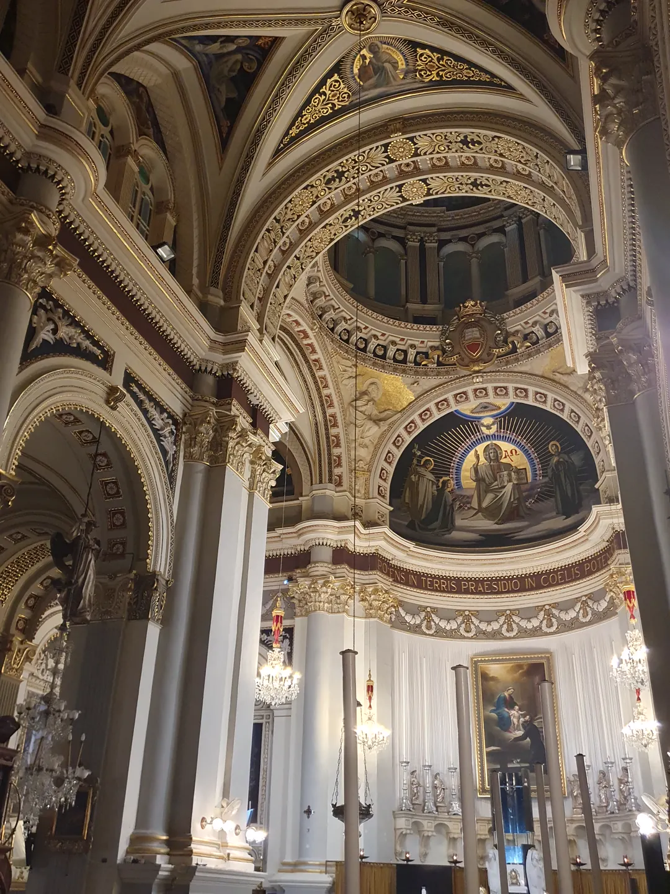

Both sides of Mile End
Route 51 lists Mile End 2 (2571), and route 53 lists Mile End 1 (2572) in the directions checked. Match the stop and direction to your destination using the operator’s planner.
Southern Region · Malta
Start on St Joseph High Road. Follow the high street into the smaller centres around the two parishes, then use your own destination to choose the right bus stop.

Street by street
Triq il-Kbira San Ġużepp is commonly called St Joseph High Road. The Local Councils’ Association also identifies an activity centre around Triq il-Kappillan Mifsud. Use both streets as starting points when comparing addresses. The local council describes a rise toward Tas-Samra.
San Gejtanu and the Immaculate Conception are separate parishes. The latter serves the area toward Gwardamanġa. The council lists the Madonna of Tas-Samra among its chapels. Check access with the relevant parish when planning a visit.
Route 51 lists Mile End 2 (2571), and route 53 lists Mile End 1 (2572) in the directions checked. Match the stop and direction to your destination using the operator’s planner.
Primary HealthCare lists the clinic at Daniel’s Shopping Mall. Ħamrun falls in the Floriana catchment. Confirm the appointment location with the service directory.
Ħamrun Spartans list Victor Tedesco Stadium on Muscat Azzopardi Street. Their fixtures can take place at different venues, so check the match listing and admission before leaving.
Three local addresses from the Malta Tourism Authority licence register. The register identifies the licence and address. Confirm menus and opening hours with the business.
181 Triq il-Kbira San Ġużepp
55 Triq il-Kbira San Ġużepp
45 Triq il-Kappillan Mifsud
The marker shows the mapped church footprint. Check the parish for entrances and visiting arrangements.
Map data © OpenStreetMap contributors.
Editorial sources reviewed 16 November 2026.
Nexus Marketplace
See local homes and explore food, shops and everyday places around the neighbourhood.
Mapped places within 2 km of the centre. This can include nearby neighbourhoods.